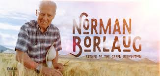

Dr. Norman Borlaug
The Man who saved a billion Life

Norman Ernest Borlaug was an American agronomist who led initiatives worldwide that contributed to the extensive increases in agricultural production termed the Green Revolution
Father of Green Revolution
A practical, energetic, hands-on researcher, Dr. Borlaug worked in the fields alongside farm workers, students, and interns; sharing his knowledge as well as the labor of producing food crops. During his twenty years in Mexico, Dr. Borlaug and his colleagues perfected a dwarf wheat variety that could produce large amounts of grain, resist diseases, and resist lodging – the bending and breaking of the stalk that often occurs in high-yielding grains. Under Dr. Borlaug’s guidance, this new wheat was planted with great success, not only in Mexico, but also in India and Pakistan. In subsequent years, the wheat was planted in nations in Central and South America, the Near and Middle East, and Africa.
Click Here To Know More .....